En informática, el algoritmo de Floyd-Warshall, descrito en 1959 por Bernard Roy, es un algoritmo de análisis sobre grafos para encontrar el camino mínimo en grafos dirigidos ponderados. El algoritmo encuentra el camino entre todos los pares de vértices en una única ejecución. El algoritmo de Floyd-Warshall es un ejemplo de programación dinámica.
El algoritmo de Floyd-Warshall compara todos los posibles caminos a través del grafo entre cada par de vértices. El algoritmo es capaz de hacer esto con sólo 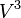 comparaciones (esto es notable considerando que puede haber hasta 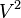 aristas en el grafo, y que cada combinación de aristas se prueba). Lo hace mejorando paulatinamente una estimación del camino más corto entre dos vértices, hasta que se sabe que la estimación es óptima.
Sea un grafo con conjunto de vértices , numerados de 1 a N. Sea además una función 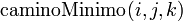 que devuelve el camino mínimo de 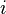 a 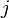 usando únicamente los vértices de 1 a como puntos intermedios en el camino. Ahora, dada esta función, nuestro objetivo es encontrar el camino mínimo desde cada a cada usando únicamente los vértices de 1 hasta 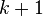.
Hay dos candidatos para este camino: un camino mínimo, que utiliza únicamente los vértices del conjunto 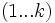; o bien existe un camino que va desde hasta , y de hasta , que es mejor. Sabemos que el camino óptimo de a que únicamente utiliza los vértices de 1 hasta está definido por , y está claro que si hubiera un camino mejor de a a , la longitud de este camino sería la concatenación del camino mínimo de a (utilizando vértices de ) y el camino mínimo de a (que también utiliza los vértices en ).
Por lo tanto, podemos definir 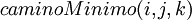 de forma recursiva:
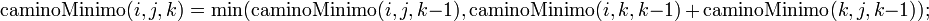
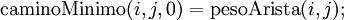
Esta fórmula es la base del algoritmo Floyd-Warshall. Funciona ejecutando primero 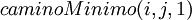 para todos los pares 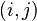, usándolos para después hallar 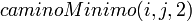 para todos los pares ... Este proceso continúa hasta que 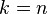, y habremos encontrado el camino más corto para todos los pares de vértices usando algún vértice intermedio.